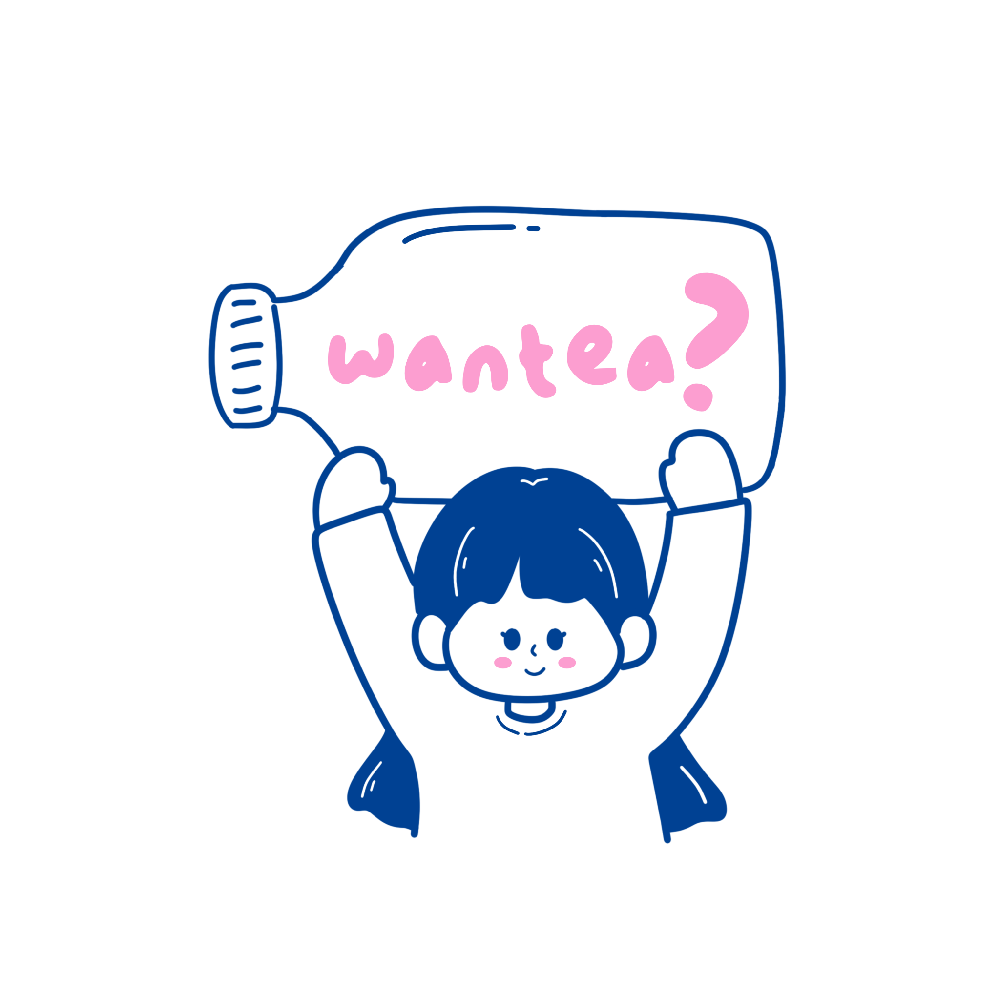

Tea Series 1
Our first chapter: thoughtfully crafted oolong in 250 ml, 500 ml and 1 liter bottles.
Carefully crafted oolong for curious people.
Mulai dari teh. Lanjut jadi cerita.

A Jakarta original / WAN TEA?One carefully crafted oolong. Three sizes.
Choose how you’d like to spend a moment.
The quick sip. A small pause in a busy Jakarta day.
Launching online. Prices and ordering details will be announced.
Our first chapter: thoughtfully crafted oolong in 250 ml, 500 ml and 1 liter bottles.
A new tea ritual follows. The next series is in the making; launch details will come later.
Quality coffee and tea, open conversation, and special gatherings around ideas that matter.
بيت الحكمة
A house for open minds.
One day, a café where quality tea and coffee meet thoughtful conversation. A place to explore philosophy, psychology, politics, science and religion—with curiosity, care and room to disagree.
Today, we begin online with tea. The physical café and special-topic gatherings belong to a later chapter.
Choose a subject. Bring your own perspective.
What makes a life well lived?
Conversation starters to explore now. Organized discussions and events are planned for a later stage.